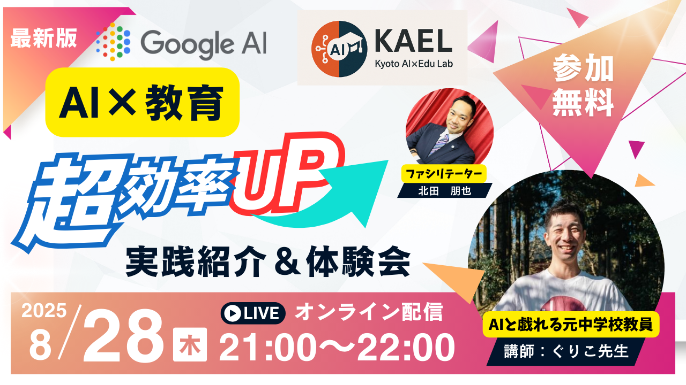
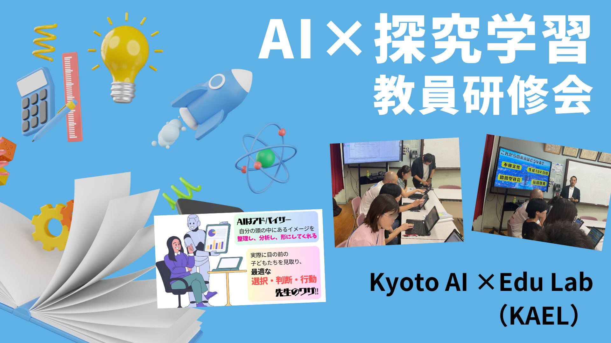
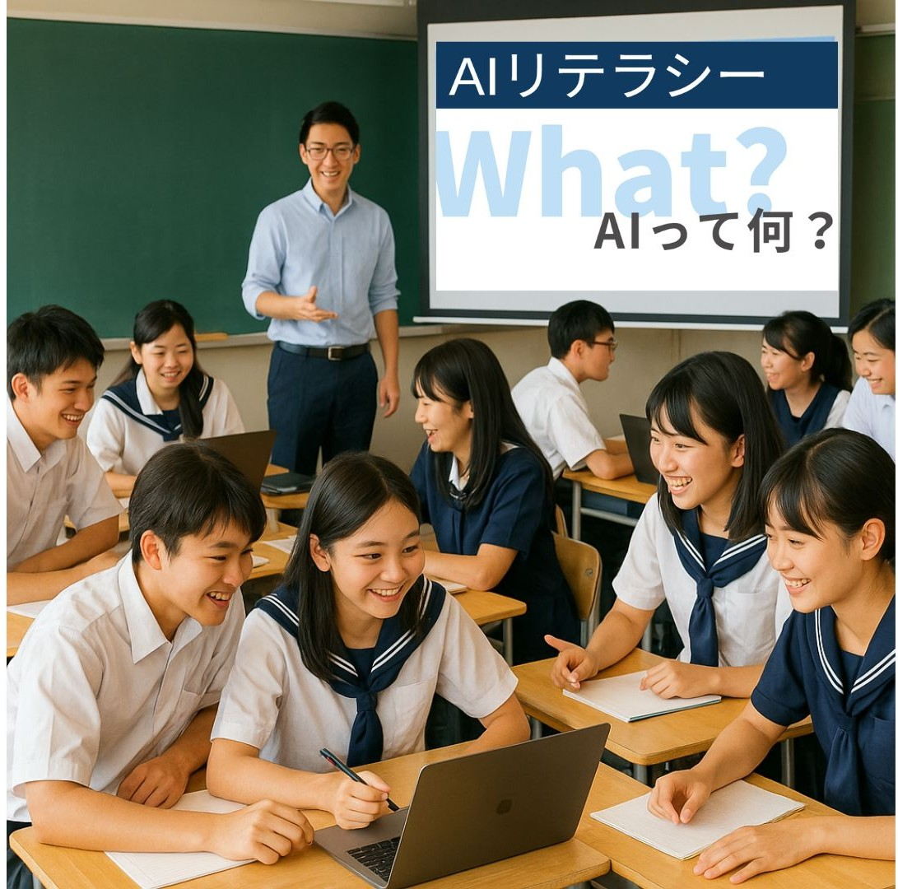
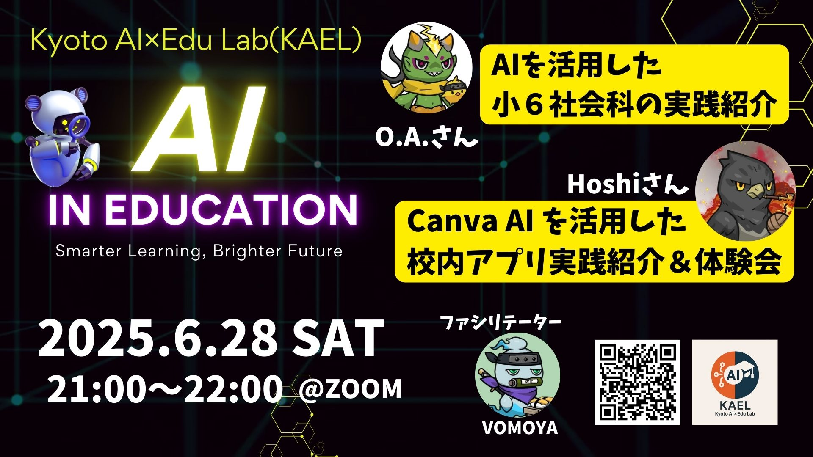

Seminar — 体験会・セミナー
Google AIで業務効率アップ
2025.08.28 (木) 21:00–22:00
「AI×教育 実践紹介＆体験会」を開催。生成AIと毎日戯れる元中学校教員ぐりこ先生を講師に迎え、Google AIツールの活用法を現場目線で紹介＆体験。教育関係者を中心に多くの方にご参加いただきました。
Kyoto AI×Edu Lab は、AI を"パートナー"に。〈学び方〉も〈生き方〉もアップデートする、京都発の教育コミュニティです。

学ぶすべての人が AI を"パートナー"に、学び方も生き方もアップデートできる拠点となる。

KAEL 代表 ／ 教育コーディネーター・社会教育士
京都市立小学校で16年間勤務し、探究学習主任・研究主任・カリキュラムマネジメント推進主任として、学校全体の学習設計と校内研究を担う。2025年に独立後、社会教育士として学校・地域・行政をつなぐ立場から、探究学習の単元設計、教員研修、生成AI・ICTの教育活用支援に取り組む。「現場を16年生きた人間が、AIで学校を変える」をミッションに、KAEL を立ち上げました。
教員も学習者も保護者も。AIと共に試して、学んで、つながる場を提供しています。
vibe coding のハンズオンで「15分で動く AIツール」を体験。先生も生徒も、手を動かしながら学べます。
Discord で日常的に質問・アイデア共有。月1回オンラインLT を開催し、現場の知見を共有しています。
GitHub・Notion にプロンプト集や教材テンプレを公開。明日の授業からすぐ使える形で配布します。
これまでに開催したワークショップ・教員研修・ミートアップの一部をご紹介します。
2025.08.28 (木) 21:00–22:00
「AI×教育 実践紹介＆体験会」を開催。生成AIと毎日戯れる元中学校教員ぐりこ先生を講師に迎え、Google AIツールの活用法を現場目線で紹介＆体験。教育関係者を中心に多くの方にご参加いただきました。

2025.05.22
京都市立葵小学校で教員約30名を対象に、探究学習でのAI活用方法について実践的なワークショップを開催。参加者は実際にAIツールを使って活動計画を作成しながら、探究学習のサポートの仕方を学びました。
"初めてAIを使った授業設計を体験しましたが、想像以上に使いやすく、新しいアイデアが生まれました。"
— 京都市立葵小学校 教諭
募集中
小学生〜高校生を対象に、AIリテラシーを学ぶ講座を実施。AIの基本的な仕組みから倫理的な課題まで、実際に体験しながら学べるワークショップを行います。

毎月開催
月例オンラインミートアップを開催中。教育現場でのAI活用事例の共有や、参加者同士のディスカッションができます。これまでのセミナー・体験会アーカイブはDiscordでメンバーに無料公開しています。
Minecraftで身近な防災課題を見つけ、対策を制作・発表する探究型ワークショップ。
参加者の声をリアルタイムで構造化し、場に返す進行を担当。
AI×教育の最先端動向を、エビデンスを引きながら教員向けに届けた講演。
「AIを"使う人"から"使いこなす人"へ」。業務でのAI活用を実践する90分講座。
AIで授業と学校がどう変わるかを、リアルタイムデモを交えて体験する公開シンポジウム。
「Gemini × NotebookLM で4月の授業を変える」。一人一台端末・生成AI活用に向けた授業設計研修。
反転授業・AIチューター・ジャストインタイム学習をテーマにした教員向け連続研修。
ワークショップ参加・コラボ相談・メディア取材など、お気軽にご連絡ください。Discord ではメンバー同士の交流と過去アーカイブの閲覧ができます。